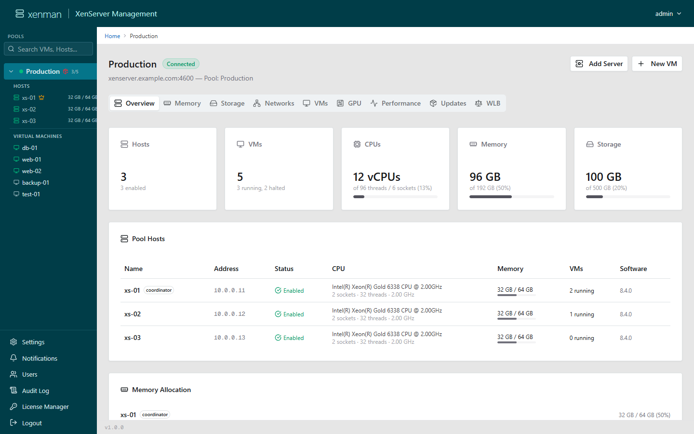
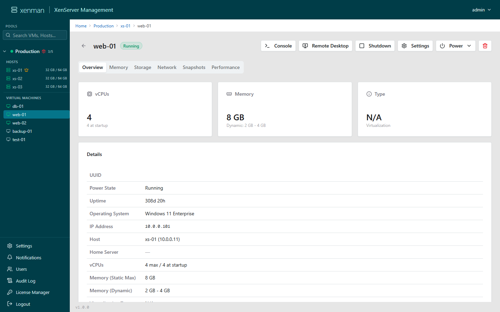
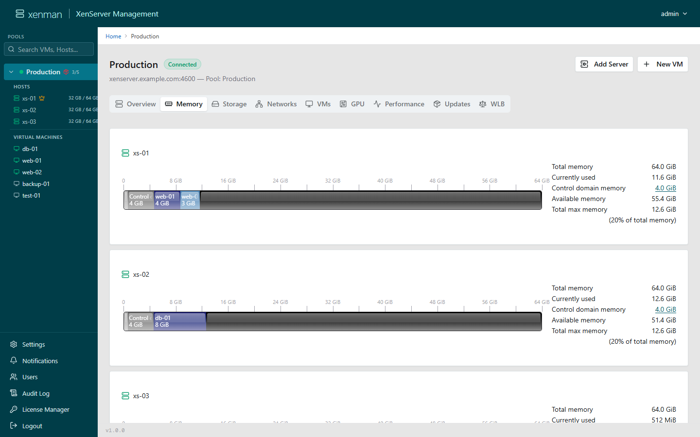
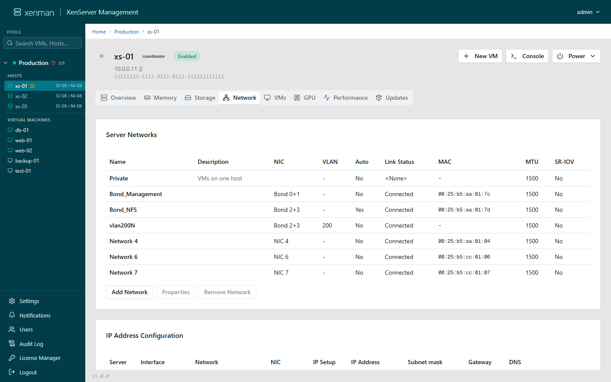
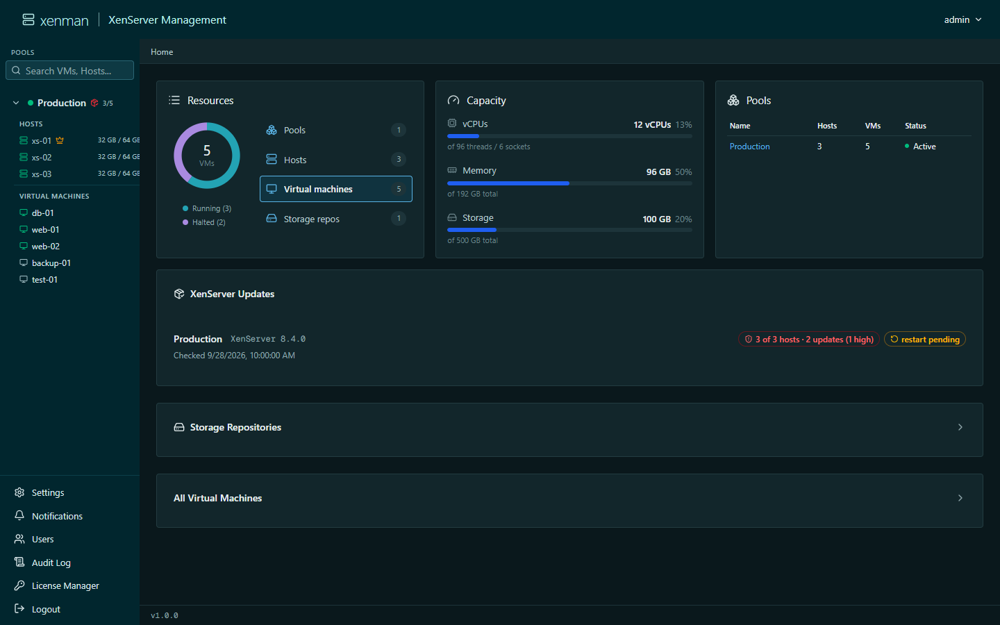

Pools and hosts
Multiple pools, maintenance mode, coordinator changes, host membership and certificate pinning.
XenServer · XCP-ng
Manage pools, hosts and virtual machines from any browser. Familiar XenCenter workflows, no Windows client required.
Preview Release candidate For test environments only.
Available as Docker container and XenServer appliance.

Day-to-day administration for single hosts and multi-site pool environments.
Multiple pools, maintenance mode, coordinator changes, host membership and certificate pinning.
Create, import, migrate, copy and delete VMs. Templates, snapshots and full hardware configuration.
Integrated VNC console with keyboard macros and clipboard support. RDP file download.
SR management including iSCSI discovery and space reclamation. Networks, bonds and VLANs.
Rolling updates with automatic VM evacuation, required restarts and e-mail notification.
Physical GPUs and vGPUs, placement policies and PVS read caching.
Pools behind NAT or firewalls, including consoles and performance data.
Performance graphs, alerts, events, audit log and syslog forwarding.
Admin, Operator and Viewer roles. Two-factor authentication and Microsoft Entra ID.
Available in light and dark theme.







XenMan has been in production use for more than eight months and covers day-to-day pool and VM administration.
The functions listed here are not yet available and still require XenCenter.
Default login: admin / admin. A new password is required at first sign-in.
Preconfigured XenServer VM based on Debian 13, delivered as .xva file.
xe vm-import filename=xenman-appliance-<version>.xvaAlternatively via XenCenter: File > Import. The VM console shows the assigned IP address. Updates are installed as signed packages, Debian security updates automatically.
Download applianceOfficial image ghcr.io/xenman-project/xenman with persistent data volume.
curl -O https://raw.githubusercontent.com/xenman-project/xenman/main/docker-compose.yml
docker compose up -dAccess via https://<host>:3001.
Requires Node.js 24 or later.
git clone https://github.com/xenman-project/xenman.git
cd xenman
npm install
npm run build
npm startDesigned for operation in production infrastructure.
Automatic or custom TLS certificate. HTTP redirect and HSTS.
Connections only to hosts with trusted certificates. Changes are reported to administrators.
Stored passwords are encrypted with AES-256-GCM. On the appliance, the key is bound to the system and TPM.
Role-based permissions per pool. Two-factor authentication or Microsoft Entra ID with MFA.
All actions are logged with user and timestamp.
XenServer sessions remain on the server and are never exposed to the browser.
XenMan is developed with AI assistance under the direction of its maintainers and tested on production XenServer pools. XenCenter-compatible behaviour is based on the published XenAdmin source code.
We recommend evaluating XenMan in a test environment before production use.